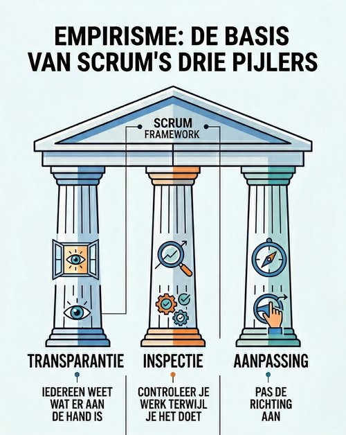

Transparantie, Inspectie & Aanpassing

Scrum is gebouwd op empirisme: leren door te doen en te observeren. Drie pijlers vormen het fundament van alles wat je in Scrum tegenkomt. Als je deze drie principes begrijpt, begrijp je waarom Scrum werkt zoals het werkt.
De drie pijlers (Transparantie, Inspectie en Aanpassing) zijn geen losse concepten. Ze zijn verweven in elk Scrum Event. Ontdek hieronder waar ze zich manifesteren.
Ontdek de drie pijlers in elk Scrum Event
Klik op een Scrum Event en gebruik de drie knoppen om te ontdekken hoe Transparantie, Inspectie en Aanpassing zich in dat event manifesteren.
Alle 15 combinaties ontdekt!
Zie je het patroon? Elk Scrum Event is ontworpen rond dezelfde drie empirische pijlers. Transparantie maakt zichtbaar, Inspectie controleert, en Aanpassing past aan. Dit is geen toeval, het is het fundament waarop heel Scrum gebouwd is.
Test jezelf: herken de pijlers in de praktijk
Lees elk scenario en beslis: is dit een voorbeeld van Transparantie, Inspectie of Aanpassing?
Een typische Sprint van 2 weken
Sprints zijn de hartslag van Scrum, waarin ideeën worden omgezet in waarde. Doorloop dag per dag hoe de vijf Scrum Events zich in een typische Sprint van twee weken afspelen.
Klik op een dag in de kalender of gebruik de navigatieknoppen om door de Sprint te wandelen.
Je bekijkt nu de officiële Scrum Guide versie. De Scrum Guide definieert exact 5 events: de Sprint zelf, Sprint Planning, Daily Scrum, Sprint Review en Sprint Retrospective. In deze weergave duurt de Sprint Planning tot 8 uur, omdat het team tijdens de planning ook de backlog items moet begrijpen en schatten.
Schakel de toggle in om te zien hoe de meeste teams in de praktijk werken, met Refinement sessies die de Sprint Planning korter en efficiënter maken.
Overzicht: de 5 Scrum Events
Storypunten inschatten met Planning Poker
Bij Planning Poker schat het Scrum Team samen de omvang van User Stories in met behulp van kaarten op basis van de Fibonacci-reeks. Het gaat niet om exacte tijd, maar om een relatieve inschatting van hoeveelheid werk, complexiteit en onzekerheid.
Project: Campi, de campusapp voor PXL-studenten. Een team van vier PXL-Digital studenten ontwikkelt een mobiele app die alles bundelt wat een student dagelijks nodig heeft: het persoonlijke lesrooster, campusnieuws, een interactief plattegrond en het dagmenu van PXL Catering. Klik op een User Story om de Planning Poker sessie te simuleren.
Fibonacci-reeks (kaartwaarden):
Retrospective Formats
Aan het einde van elke Sprint reflecteert het Scrum Team tijdens de Sprint Retrospective op hun manier van werken. Een goed format structureert het gesprek en zorgt dat het team met concrete verbeteringen naar de volgende Sprint gaat.
De drie formats hier zijn slechts voorbeelden: er bestaan tientallen retrospective formats, elk met een eigen opzet en invalshoek. Welk format je kiest hangt af van de nood van het team en de fase van het project.
Elke retrospective eindigt idealiter met een beperkt aantal concrete actiepunten. Liever 2 acties die het team zeker uitvoert dan een lange lijst die blijft liggen. Acties die sprint na sprint onuitgevoerd blijven, zijn trouwens zelf een bron van frustratie: ze komen gegarandeerd terug als post-it in de volgende retrospective.